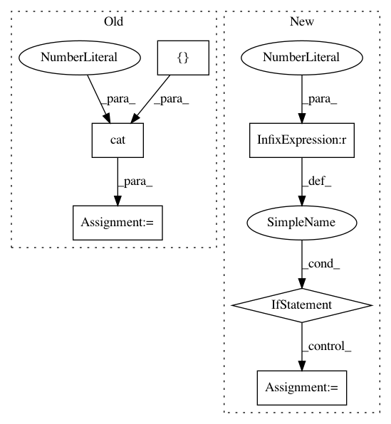

722414ddda2ee5512dbfbeba1c13a3f16ef954e6,torch_geometric/datasets/utils/planetoid.py,,read_planetoid,#Any#,21
Before Change
input[test_index, :] = input[test_index_sorted, :]
ty, ally = torch.LongTensor(ty), torch.LongTensor(ally)
target = torch.cat([ally, ty], dim=0)
target[test_index, :] = target[test_index_sorted, :]
target = target.max(dim=1)[1]
row, col = [], []
After Change
// Find isolated nodes and add them as zero-vec into the right position.
min, max = test_index_sorted[0], test_index_sorted[-1]
print(max - min)
if max - min > 1000:
// mask = torch.ByteTensor(max + 1 - min).fill_(0)
// mask[test_index_sorted - min] = 1
// print(mask[:100])
x = 2407
// print(test_index_sorted[:100])
// test_index_full = torch.arange(min, max + 1).long()
print("drin")
// raise NotImplementedError
allx, tx = torch.Tensor(allx.todense()), torch.Tensor(tx.todense())
input = torch.cat([allx, tx], dim=0)
print(input.size())
// input[test_index, :] = input[test_index_sorted, :]
In pattern: SUPERPATTERN
Frequency: 3
Non-data size: 6
Instances
Project Name: rusty1s/pytorch_geometric
Commit Name: 722414ddda2ee5512dbfbeba1c13a3f16ef954e6
Time: 2018-03-09
Author: matthias.fey@tu-dortmund.de
File Name: torch_geometric/datasets/utils/planetoid.py
Class Name:
Method Name: read_planetoid
Project Name: elbayadm/attn2d
Commit Name: 3dcb5c77165c1a0c33a35a7831182f1aa2e8ad73
Time: 2019-10-18
Author: changhan@fb.com
File Name: fairseq/models/model_utils.py
Class Name:
Method Name: fill_tensors